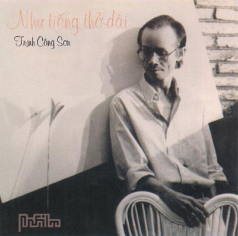

...Tân Nhạc đã có tới bốn đời nhạc sĩ và có hàng trăm, hàng ngàn ca khúc được soạn ra và hát lên. Trong Hồi ký này, tôi chỉ nhắc tới những người đánh dấu thời đại một cách sâu đậm bằng tác phẩm của mình.
Người nổi nhất là Trịnh Công Sơn. Trước tiên, người ta biết tới anh nhờ Quán Văn. Quán do nhóm sinh viên mang tên Khai hóa chủ trương. Nhóm này đã làm nhà xuất bản Quảng Hóa rồi khi phong trào phòng trà thịnh hành, nhóm mở quán cà phê ở ngay trung tâm Sài Gòn, trên nền Khám Lớn cũ trong khu Đại học Văn khoa, sinh viên tới uống cà phê nghe nhạc và nghe Khánh Ly hát.
Bài hát của Trịnh Công Sơn được nghe tại Quán Văn lúc đầu là Lời buồn thánh. Cũng như nhạc Đặng Thế Phong, bài hát tân lãng mạn (néo-romantique) này nói về nỗi buồn. Bài Lời buồn thánh thật là buồn, như bài hát buồn làm cho người âu Châu phải tự tử là Chủ nhật buồn tôi đã nói tới trong một chương sách. Trong bài hát của mình, họ Trịnh cũng nói tới ngày chủ nhật buồn:
Chiều chủ nhật buồn
Nằm trong căn gác đìu hiu
Ôi tiếng hát xanh xao của một buổi chiều
Trời mưa trời mưa không dứt
Ô hay mình vẫn cô liêu...
Thoạt nghe đã thấy ngay là tiếng hát đau đớn, thay mưa ảm đạm trong lòng (như thơ Verlaine), thấy sự cô đơn, hoang vắng.
Sinh ra ở Ban Mê Thuột, sống ở Huế, mưa ám ảnh Trịnh Công Sơn rất nhiều cho nên cũng vẫn là nỗi buồn của ngày chủ nhật mùa mưa trong bài Tuổi đá buồn:
Trời còn làm mưa, mưa rơi mênh mang
từng ngón tay buồn em mang em mang
Đi về giáo đường, ngày chủ nhật buồn...
Nhạc Trịnh Công Sơn là nhạc nói về QUÊ HƯƠNG, TìNH YÊU, và THÂN PHậN CON Người. Hãy nói về tình khúc Trịnh Công Sơn, nói về thân phận Người Tình trong giai đoạn quê hương đổ nát này.
Từ khi Tân nhạc Việt Nam ra đời đầu thập niên 40, đã có những tình khúc của Lê Thương, Lê Yên, Hoàng Giác, Doãn Mẫn... Lúc đó là thời bình, khi tình còn xanh và yêu chưa lo sợ. Ngôn ngữ tình yêu thật là bình dị, đối tượng là cô hái mơ, cô láng giềng, cô lái đò, cô hái hoa hay anh Trương Chi. Từ khi nước Việt bị chia đôi, nhạc tình miền Nam đậm sắc và trong mười năm đầu, vì cuộc đời chưa thực sự bị đe doạ, người ta vẫn có những bài hát hữu tình hay thất tình, xinh xinh, hiền lành, lúc đầu còn mới mẻ dần dà ngôn ngữ tình yêu trở thành sáo ngữ. Tới lúc đời sống trở nên bấp bênh, thanh niên được gọi đi lính rất nhiều, biết bao nhiêu đôi lứa phải xa nhau, tình khúc miền Nam thay đổi ngôn ngữ.
Nhạc tình không còn là nhạc lãng mạn, nhạc cảm tính với câu hát đắm đuối hay hờn dỗi nữa! Bây giờ là những bài hát nhức nhối của những tình nhân yêu nhau trong cơn mê sảng. Nhạc trở thành não nề và đánh vào não tính. Nhạc tình bây giờ là tình ca của người mất trí.
Tình khúc Trịnh Công Sơn ra đời, từ giàn phóng là Quán Văn được hoả tiễn Khánh Ly đưa vút vào phòng trà, rồi vào băng cassette và chỉ trong một thời gian ngắn chinh phục được tất cả người nghe. So với tình khúc của ba bốn chục năm qua, ngôn ngữ trong nhạc Trịnh Công Sơn rất mới, chất chứa những hình ảnh lạ lùng, quyến rũ như cơn mưa hồng, thuở hồng hoang, dấu địa đàng, cánh vạc bay...
Tình yêu trong nhạc của anh là những cảm xúc dữ dội "Như trái phá con tim mù loà", “Như nỗi chết cơn đau thật dài", như vết thương mở rộng... Cuộc đời là hư vô chủ nghĩa, con người sống trong cảnh Chúa, Phật bỏ loài người. Cuộc đời còn là đám đông nhưng cũng là quán không. Con người là cát bụi mệt nhoài, bao nhiêu năm làm kiếp con người, chợt một chiều tóc trắng như vôi... Tất cả nói lên sự muộn phiền, đau đớn... Buồn tủi cho thân phận con người nên nhánh cỏ cũng xót xa, phiến đá cũng ưu phiền, và chỉ còn những mưa và mưa để xoa dịu vết thương mở lớn? Hãy nghe thêm những câu hát về mưa trong Diễm xưa:
Mưa vẫn hay mưa cho đời biển động
Làm sao em biết bia đá không đau ?
Xin hãy cho mưa qua miền đất rộng
Ngày sau sỏi đá cũng cần có nhau...
Diễm xưa cho thấy rõ tiếng hát đứt đoạn của nội tâm về nỗi đau con người trong tình yêu, thấy thêm sự hoang vắng của tâm hồn. Bị ám ảnh bởi mưa đến độ còn nhìn ra mầu sắc của mưa -- Mưa hồng -- Trịnh Công Sơn nói lên nỗi bàng hoàng của con người khi thấy cái chết nằm ngay trong sự sống:
Người ngồi xuống xin mưa đầy
Trên hai tay cơn đau dài
Người nằm xuống nghe tiếng ru
Cuộc đời đó có bao lâu mà hững hờ?
Nguyễn Đình Toàn gọi nhạc Trịnh Công Sơn là những bản tình ca không có hạnh phúc, những bài hát cho quê hương đổ vỡ. Cũng là phản ứng của con người đau đớn trong hoàn cảnh đất nước, nhưng nó là sự chịu đựng và chết lịm hơn là sự nổi xung và chửi bới. Có lẽ vì tác giả là người lớn lên ở Huế, một thành phố nên thơ, hiền hoà, chấp nhận bạo động. Tôi vẫn cho người Việt ở ba miền đất nước có những phản ứng khác nhau trước những hoàn cảnh khó khăn. Ví dụ người con gái miền Bắc thất tình thì phản ứng bằng sự điên giả -- CHÈO có vở Vân đại giả điên -- hay điên thật rồi nguyền rủa, chửi bới cuộc đời. Sự phản ứng của người gái Huế là buông xuôi (fatalisme), mất người tình là nàng có thể đâm đầu xuống sông tự tử. Còn ở miền Nam à? Không cong đơ gì cả, người thất tình sẽ đốt chồng như cô Quờn.
Về phần nhạc, toàn thể ca khúc Trịnh Công Sơn không cầu kỳ, rắc rối vì nằm trong một số nhạc điệu đơn giản, rất phù hợp với tiếng thở dài của thời đại. Bài hát chỉ cần một chiếc đàn guitare đệm theo, nếu hoà âm phối khí rườm rà thì không hợp với những bài hát soạn theo thể ballade này.
Từ nhạc tình yêu, thân phận con người, Trịnh Công Sơn chuyển qua nhạc thần thoại quê hương. Âm nhạc ở miền Nam trong thời gian này thật phong phú. Vẫn có những bài hát soạn cho tuổi choai choai: Em 16, Em mới biết yêu đã biết sầu, Túp lều lý tưởng, Người tình chung vách, Người tình chung thủy và cho người lính cộng hoà: Lính mà em, Lính dù lên điểm, Lính nghĩ gì, Lính xa nhà, Lời người lính xa, Lính trận miền xa, Anh là lính đa tình, Người lính chung tình, Đám cưới nhà binh... Và có thêm những bài hát phản ứng trước cảnh tang thương của đất nước. Như đã nói trong chương trước, nhạc tâm ca, du ca lúc này là sự phẫn nộ của thanh niên khi thấy mình bị đưa lên giàn hoả thiêu hoặc phải đi vào quê hương bằng cuộn dây thép gai... rồi xuống vỉa hè và trở thành tục ca.
Bây giờ, ngoài những ca khúc đi vào Tình nhớ, Tình xa, Tình sầu với cơn chết lịm, với nỗi muộn phiền và niềm xót xa trong cảnh cô đơn mà ta đã biết, nhạc Trịnh Công Sơn phản đối nghịch cảnh bằng cách khác. Nhạc anh đi vào quê hương bằng bước chân của người con gái da vàng, của em bé loã lồ suốt đời lang thang...
Sống cùng thời với những người đi vào quê hương qua nhiều nẻo đường, Trịnh Công Sơn cũng nhận diện lại quê hương. Đi tìm quê hương, phải sống những ngày dài trên quê hương thì phải hát bài quê hương, phải nhỏ giọt nước mắt cho quê hương khi thấy quê hương hình hài nát dấu bom với xác người chết hai lần... Phải gặp những người tình có người yêu chết trận Pleime hay chết ở chiến khu D, gặp thêm người già em bé, chị gái anh trai, người phu quét đường, đồng hoá họ là người nô lệ da vàng, ngủ im trong căn nhà nhỏ... chờ ngày quê hương sáng chói, đứng dậy hò reo, chờ Hoà Bình đến tiếng bom im, cho những bước đi trên những con đường không chông mìn, cho đường giao thông chắp nối chuyến xe qua ba miền, ngày Thống Nhất tới cho những tình thương vô bờ...
Nhạc thần thoại quê hương, nhạc tình yêu và thân phận con người của Trịnh Công Sơn có một tư tưởng chỉ đạo khá rõ, dù toàn bộ âm nhạc của anh đẹp như một bức hoạ trừu tượng hơn là tả thực. Cả nhạc lẫn lời, cả xác chữ lẫn hồn thơ, nghe bảng lảng, mơ hồ khó phân định cho đúng nghĩa, nhưng nếu nghe kỹ cũng tìm ra ý chính: Trịnh Công Sơn muốn nói lên nỗi đau con người trong cuộc sống hiện đại, có tình yêu, có chiến tranh, có hận thù, có cái chết dễ dàng như chết trong mơ. Anh ca tụng tình yêu, anh chống bạo lực và chống chiến tranh.
°°°
Từ 1975 cho tới năm 2000, suốt 25 năm xa quê hương đất nước, tôi không có cơ hội để theo dõi sinh hoạt của âm nhạc Việt Nam và không biết sau cơn hồng thủy. nhạc Trịnh Công Sơn ra sao, là nhạc chắp cánh bay lên hay nhạc la đà chìm xuống? Nhưng qua dăm bẩy băng nhạc sản xuất tại Hoa Kỳ trong đó có vài ba bài ca mới soạn của Trịnh Công Sơn thì tôi thấy nhạc của anh vẫn là nhạc tình yêu và nhạc thân phận làm người.
Nhưng vào năm 1980, ngẫu nhiên Trịnh Công Sơn và tôi cùng có mặt ở Paris, trong nỗi vui mừng gặp nhau của hai người cùng có chung một phận, Trịnh Công Sơn hát cho tôi nghe bài hát Lặng lẽ nơi này mà anh vừa mới viết:
Trời cao đất rộng,
Một mình tôi đi
Một mình tôi đi
Đời như vô tận,
Một mình tôi về
Một mình tôi về...với tôi!
...thì tôi thấy nghệ sĩ nào rồi cũng phải mang số phận cô đơn truyền kiếp, ở quê hương hay xa quê hương vào thời bình hay chinh chiến, giữa dám đông hay khoảng trống, nơi thiên đàng hay địa ngục... Chỉ còn có thể về với mình, về với tôi như Sơn đã nói.
“Trời cao đất rộng, một mình tôi đi"... Cô đơn truyền kiếp phải chăng là kiếp của nhiều ca nhân? Văn Cao khi mới chỉ là chàng Trương Chi tuổi còn rất xanh, tài hoa đang nở rực, chưa hề biết phận mình mỏng manh ra sao trong cơn gió lốc sẽ tới, mà cũng đã chỉ muốn:
Ngồi đây ta gõ mạn thuyền Ta ca, trái đất còn riêng ta.
Còn tôi? Tôi còn phải sống, đôi khi phải đổi chỗ đứng, đổi chỗ ngồi cho đỡ buồn trong cõi trần ai sầu muộn này, từ rất lâu ngồi đâu thì cũng chỉ là ngồi một mình trong cái TA.
Trịnh Công Sơn đã thực sự về với đất, với trời, nghĩa là về với mình rồi, chúng tôi biết rằng anh đã nghìn lần nói lên nghìn lời trối trăn qua tác phẩm, lời nào cũng làm cho mọi người thấy được nỗi đau làm người, nỗi đau tình cờ, cơn đau chưa dài và cơn đau lên đầy, quá nửa đời người không một ngày vui...
Nhưng theo tôi, có lẽ sau đây là lời trăn trối tuyệt diệu nhất, lời cuối cùng Trịnh Công Sơn nói với Trịnh Công Sơn:
Đừng tuyệt vọng, tôi ơi đừng tuyệt vọng,
Lá mùa Thu rơi rụng giữa mùa Đông.
Đừng tuyệt vọng, em ơi đừng tuyệt vọng
Em là tôi và tôi cũng là em.
Con diều bay mà linh hồn lạnh lẽo
Con diều rơi cho vực thẳm buồn theo
Tôi là ai mà còn khi dấu lệ?
Tôi là ai mà còn trần gian thế!
Tôi là ai, là ai... là ai
Mà yêu quá đời này!
Trích hồi ký của PD.